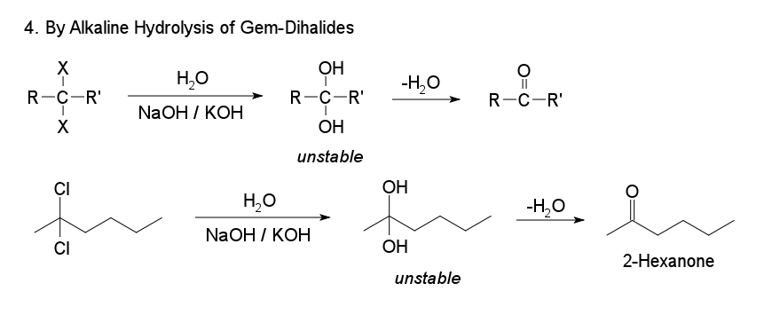

Synthesis of 2-Hexanone
Preparation of 2-hexanone
1. Oxidation of Secondary Alcohols

The oxidation of secondary alcohols to ketones may be carried out using strong oxidizing agents, because further oxidation of a ketone occurs with great difficulty. Normal oxidizing agents include potassium dichromate (K2Cr2O7) and chromic acid (H2CrO4). The conversion of 2‐propanol to 2‐propanone illustrates the oxidation of a secondary alcohol.
Where a secondary alcohol is oxidised, it is converted to a ketone. The hydrogen from the hydroxyl group is lost along with the hydrogen bonded to the second carbon. The remaining oxygen then forms double bonds with the carbon. This leaves a ketone, Ketones cannot normally be oxidised any further because this would involve breaking a C–C bond, which requires too much energy.
2. Catalytic Dehydrogenation of Secondary Alcohols
3. Ozonolysis of Alkenes
When one or both alkene carbons contain two alkyl groups, ozonolysis generates one or two ketones. The ozonolysis of 2,3‐dimethyl-2-heptene produces both propanone (a ketone) and 2-Hexanone (a ketone).
4. By Alkaline Hydrplysis of Gem-Dihalides
Ketones are obtained by the alkaline hydrolysis of gem dihalides in which the two halogen atoms are not attached to the terminal carbon atom.
How to make 2-Hexanone?
A mixture of 1 g of mercury(II) sulfate, 1 g of concentrated sulfuric acid, and 150 g of 70% methanol (or 150 g of 70% acetone or 50 g of 60% acetic acid) is warmed to 60° in a 500-ml three-necked flask fitted with a stirrer, dropping funnel, and reflux condenser. 1-Hexyne (41.0 g, 0.5 mole) is dropped in, with stirring, within 1 hour. The mixture is stirred for a further 3 hours at the temperature stated, then cooled, and worked up. The methanol (or acetone) is distilled off and the 2-hexanone is salted out from the residue by solid sodium chloride. The ketone layer is separated, washed, neutralized, dried over calcium chloride, and distilled, giving 78.8% of 2-hexanone, b.p. 120°. When acetic acid has been used as solvent, it is neutralized with sodium carbonate solution before working up as above.